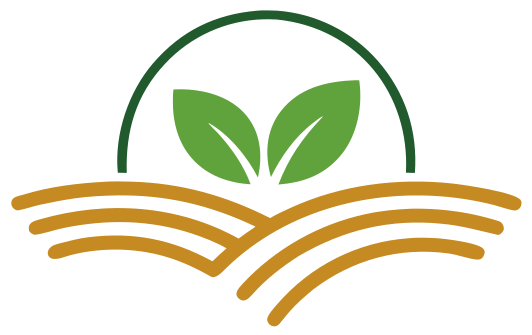
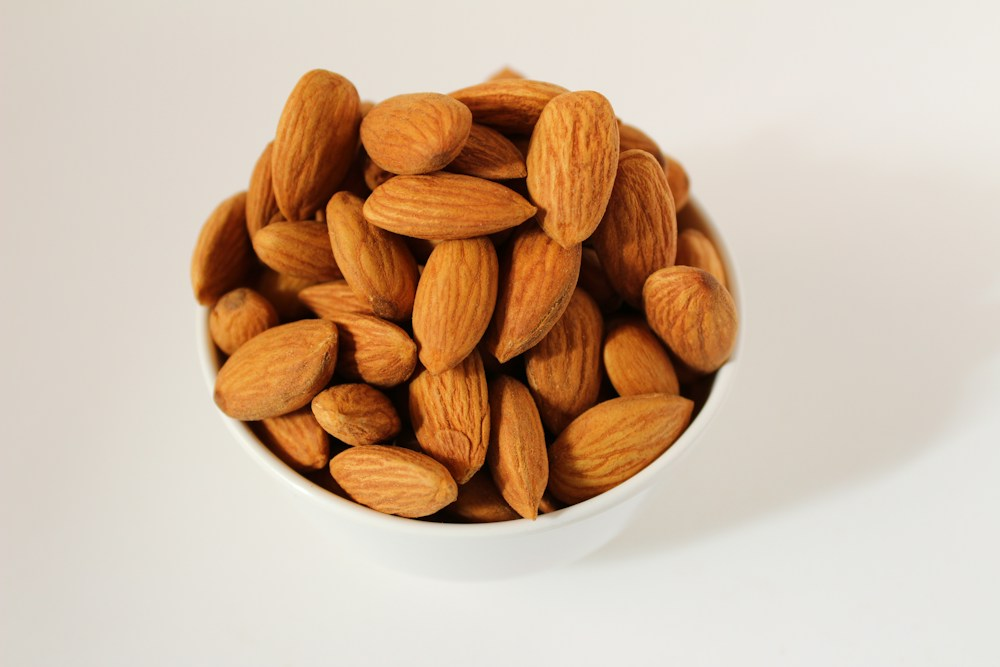
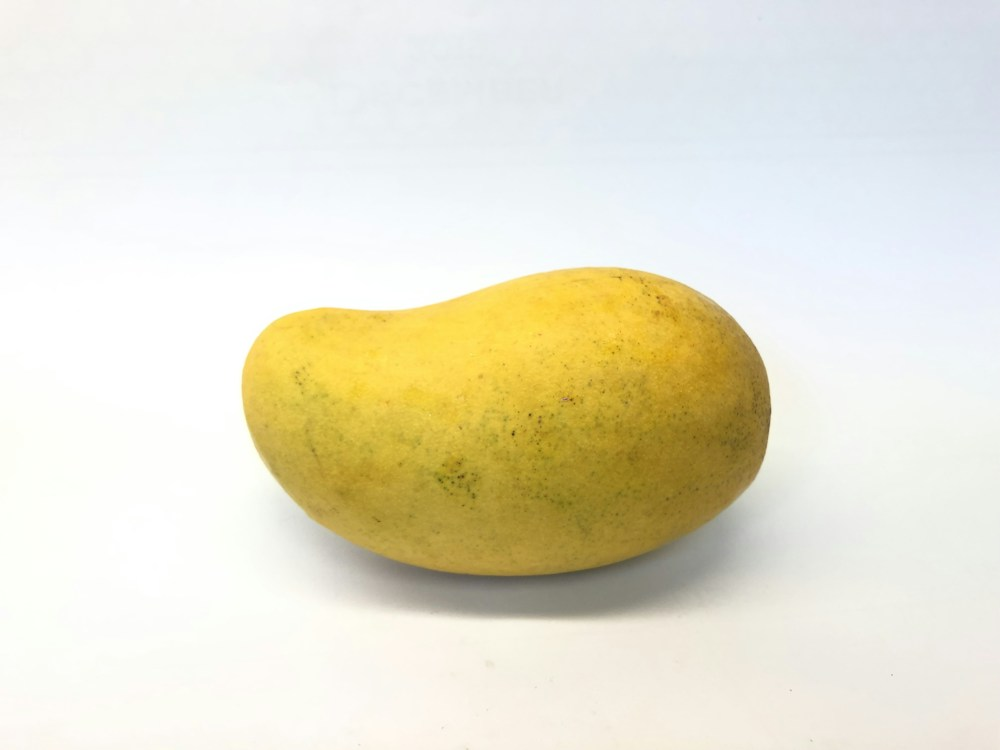
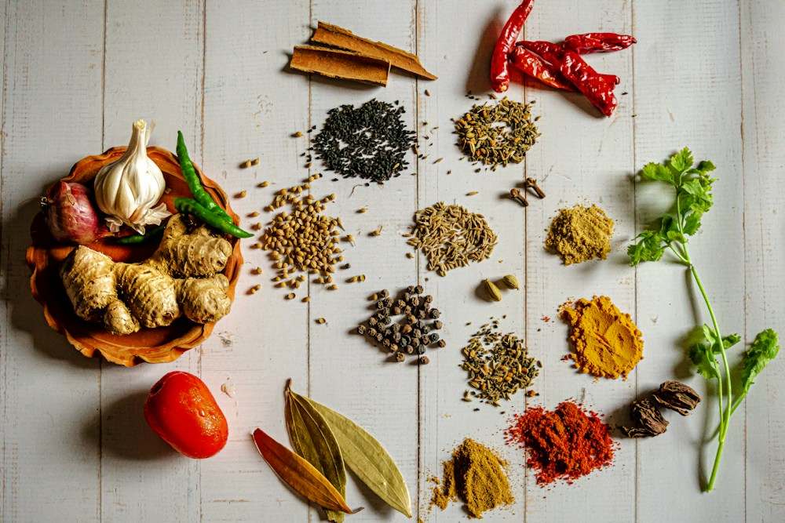
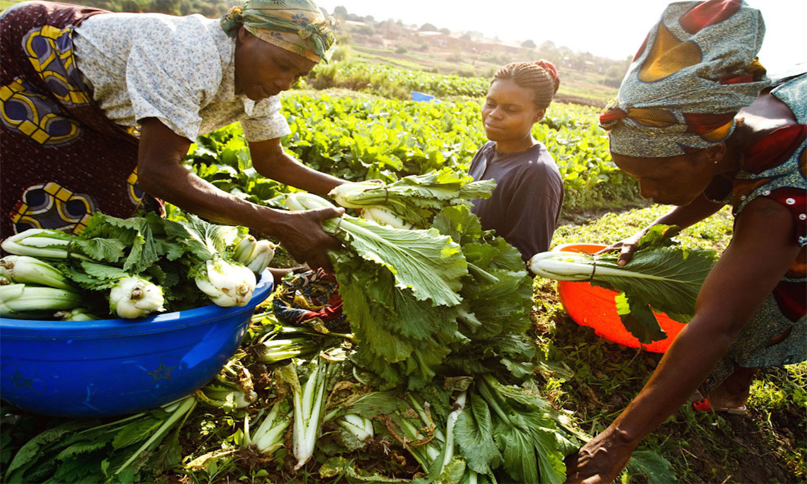

Sélection à la source
Nos références prioritaires sont sélectionnées au plus près des récoltes, et nous étudions aussi d'autres produits agricoles selon votre besoin.

NovarixNOVARIX · EXPORT DE PRODUITS AGRICOLES
Cajou, mangue séchée et sésame sont nos références. Des produits sélectionnés à la source, avec la possibilité d'étudier d'autres besoins agricoles.
Notre promesse
Nous préparons des produits agricoles fiables pour l'approvisionnement et l'export international. Vous échangez avec un interlocuteur clair, du premier besoin jusqu'à l'expédition.
Notre façon de travaillerNos références prioritaires sont sélectionnées au plus près des récoltes, et nous étudions aussi d'autres produits agricoles selon votre besoin.
Chaque lot est suivi du producteur à l'expédition. Vous savez exactement ce que vous recevez.
Chaque produit est contrôlé avant le conditionnement. Pas de mauvaise surprise à l'arrivée.
Une qualité constante à un coût maîtrisé, avec un interlocuteur réactif de la demande au départ de la marchandise.
Nos priorités agricoles
La noix de cajou, la mangue séchée et le sésame sont au cœur de notre offre. Nous étudions aussi d'autres produits agricoles pour vos marchés et cahiers des charges.

01 / 03
Noix de cajou issues de l'agriculture bio, pour la consommation directe ou la transformation industrielle.
Consommation directe et industrie
Demander un devis
02 / 03
Mangue séchée issue de l'agriculture bio, tendre et parfumée, pour la distribution comme pour l'industrie.
Consommation directe et industrie
Demander un devis
03 / 03
Graines de sésame bio sélectionnées, pour l'industrie agroalimentaire comme pour la consommation directe.
Consommation directe et industrie
Demander un devis
De la terre au marché international
Nous travaillons au plus près des producteurs et des récoltes. Chaque lot est sélectionné à la source, contrôlé puis préparé pour rejoindre votre marché dans les meilleures conditions.
01Sélection à la source
02Lots contrôlés et tracés
03Expédition coordonnée
Notre processus
Un interlocuteur unique pour avancer avec clarté, de votre première demande au départ de la marchandise, quelle que soit votre destination.
Nous choisissons les produits bio à la source.
Chaque lot est inspecté avant de passer à l'étape suivante.
Un emballage soigné pour préserver la qualité pendant le transport.
Un envoi export, organisé avec vous.
Parlons de votre besoin
Indiquez le produit, la quantité et la destination souhaités. Nous revenons vers vous avec un devis clair et adapté.